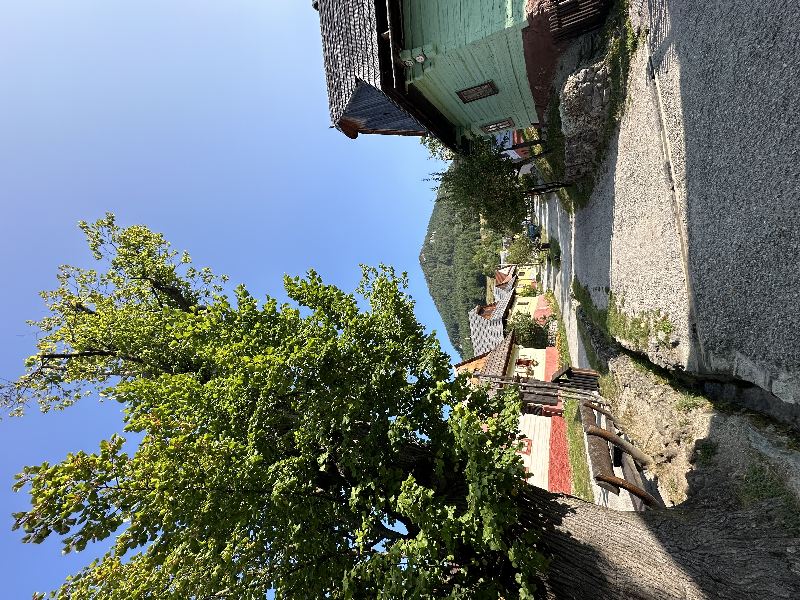
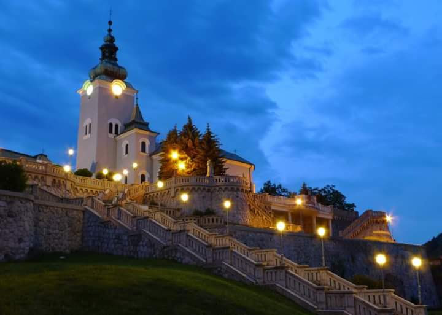
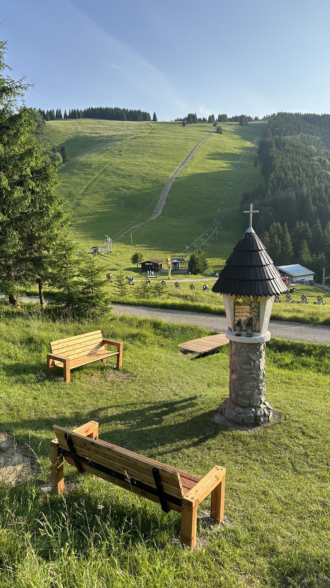

🏡 Vlkolínec

Jedinečná historická osada zapísaná v zozname svetového dedičstva UNESCO. Preslávili ju tradičné drevenice.

📍 Slovensko · Žilinský kraj · Liptov
Ružomberok leží v srdci krásneho Liptova, obklopený horami a nádhernou prírodou. Je ideálnym miestom pre milovníkov turistiky, cyklistiky, histórie aj rodinných výletov.

Jedinečná historická osada zapísaná v zozname svetového dedičstva UNESCO. Preslávili ju tradičné drevenice.

Obľúbené stredisko na lyžovanie, turistiku a horskú cyklistiku. Krásne výhľady potešia v každom ročnom období.
Rekreačná oblasť s vodnou nádržou, prírodou a možnosťami na oddych aj aktívny výlet.
Príjemné miesto na prechádzky, turistiku a výlety s rodinou. Nájdete tu krásne lesné prostredie.
Tento profil je ukážkou bezplatnej prezentácie mesta na portáli KamV Československu. V budúcnosti ho bude možné doplniť o fotografie, podujatia a ďalšie tipy.
← Späť na Mestá a obce